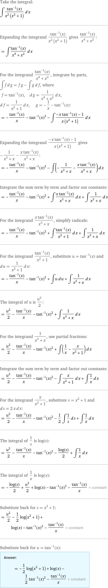
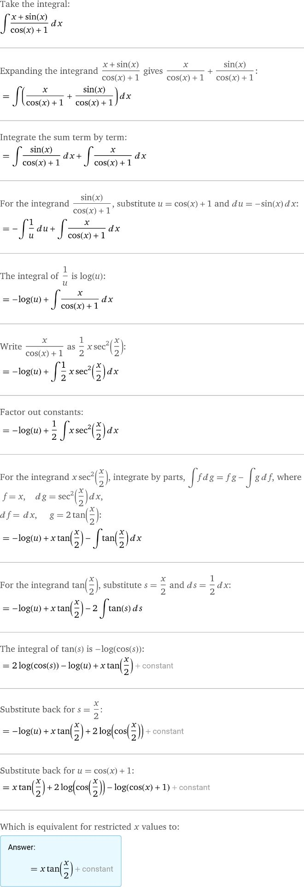

积分表
- \(\displaystyle \int k \mathrm{~d} x=k x+C\quad\left(\int 0 \mathrm{~d} x=C\right)\);
- \(\displaystyle \int x^\alpha \mathrm{d} x=\frac{1}{\alpha+1} x^{\alpha+1}+C \quad(\alpha \neq-1)\);
常用形式：- \(\displaystyle \int x\mathrm d x=\frac{1}{2}x^{2}\)
- \(\displaystyle \int \sqrt{x} \mathrm d x=\frac{2}{3} x^{\frac{3}{2}}+C\)
- \(\displaystyle \int \frac{\mathrm d x}{\sqrt{x}}=2 x^{\frac{1}{2}}+C=2 \sqrt{x}+C\)
- \(\displaystyle \int \frac{\mathrm d x}{x^2}=-x^{-1}+C=-\frac{1}{x}+C\)
- \(\displaystyle \int \frac{1}{x} \mathrm{~d} x=\ln \textcolor{orange}{ |x| }+C\);
- P.S. \(\ln x\) 的定义域为 \(x>0\), \(\frac{1}{x}\) 的定义域为 \(x\neq 0\) 故需要绝对值
- \(\displaystyle \int \frac1{ax+b}\mathrm dx=\frac{\ln|ax+b|}{a}+C\)
- \(\displaystyle \int a^x \mathrm{~d} x=\frac{a^x}{\ln a}+C \quad(0<a \neq 1)\);
- P.S. \((a^x)'=\ln a\cdot a^x\)
- \(\displaystyle \int \mathrm{e}^x \mathrm{~d} x=\mathrm{e}^x+C\);
- \(\displaystyle \int \sin x \mathrm{~d} x=-\cos x+C\);
- \(\displaystyle \int \cos x \mathrm{~d} x=\sin x+C\);
-
\(\displaystyle \int \sec^2 x \mathrm{~d} x=\tan x+C\);
-
\(\displaystyle \int \sec x \mathrm d x=\ln\left|\sec x+\tan x\right|+C\)
-
\(\displaystyle \int \csc ^2 x \mathrm{~d} x=-\cot x+C\);
-
\(\displaystyle \int \csc x \mathrm d x =-\ln|\csc x+\cot x|+C = \ln\left(\tan \frac{x}{2}\right)\)
-
\(\displaystyle \int \frac{\mathrm{d} x}{a^2+x^2}=\frac{1}{a} \arctan \frac{x}{a}+C(a \neq 0)\);
P.S. \(\left(\frac{1}{a} \arctan \frac{x}{a}\right)^{\prime}=\frac{1}{a} \cdot \frac{1}{a} \frac{1}{1+\left(\frac{x}{a}\right)^2}=\frac{1}{a^2+x^2}\)
- \(\displaystyle \int\frac{\mathrm dx}{1+x^{2}}=\arctan x+C\)
-
\(\displaystyle \int \frac{\mathrm{d} x}{x^2-a^2}=\frac{1}{2 a} \ln \left|\frac{x-a}{x+a}\right|+C\quad(a \neq 0)\);
- \(\displaystyle \int \frac{d x}{a^2-x^2}=\frac{1}{2 a} \ln \left|\frac{x+a}{x-a}\right|+C\)
-
\(\displaystyle \int \frac{\mathrm{d} x}{\sqrt{a^2-x^2}}=\arcsin \frac{x}{a}+C(a>0)\);
-
\(\displaystyle \int \frac{\mathrm{d} x}{\sqrt{x^2 \pm a^2}}=\ln \left|x+\sqrt{x^2 \pm a^2}\right|+C\).
补充不定积分
- \(\int \tan(x) \mathrm d x=\ln(\cos(x))\)
- \(\int \sqrt{ x^{2}\pm a^{2} } \, dx=\frac{x}{2}\sqrt{ x^{2}\pm a^{2} }\pm \frac{a^{2}}{2}\ln \left| x+\sqrt{ x^{2}\pm a^{2} } \right|+C\)
- \(\int \sqrt{ a^{2}-x^{2} } \, dx=\frac{x}{2} \sqrt{ a^{2}-x^{2} } +\frac{a^{2}}{2} \arcsin \frac{x}{a} + C\)
- \(\textbf{Reduction Formula: }I(m,n)=\int \cos ^{m}x\sin ^{m}x \, dx=\dots\)(递推)
- \(\int \arctan x \, dx=-\frac{1}{2}\ln(x^{2}+1)+x\arctan(x)+C\)
部分积分推导
\(\int \frac{1}{x^2+a^2} \, dx=\frac{1}{a}\arctan \frac{x}{a}+C\) "AA"
Tips
\((\arctan x)'=\frac{1}{1+x^2}\)
\(\left(\textcolor{orange}{ \frac{1}{a} } \arctan \frac{x}{\textcolor{Cyan}{ a }}\right)^{\prime}=\textcolor{orange}{ \frac{1}{a} } \cdot \textcolor{Cyan}{ \frac{1}{a} } \frac{1}{1+\left(\frac{x}{a}\right)^2}=\frac{1}{a^2+x^2}\)
Solution
\[ \begin{flalign} &\text{Assuming } a>0\newline &=\frac{1}{a^{2}}\int \frac{1}{1+\left( \frac{x}{a} \right)^{2} } \, dx \newline &=\frac{1}{a}\int \dfrac{d\left( \frac{x}{a} \right)}{1+\left( \frac{x}{a} \right)^{2}}\newline &=\frac{1}{a}\arctan \frac{x}{a}+C \end{flalign} \]
\(\int \frac{1}{x^{2}-a^{2}} \, dx=\frac{1}{2a}\ln \left| \frac{x-a}{x+a} \right| +C\) ½a ∓
Tips
\[ {\text{凑2a}\implies} \frac{1}{x-a}-\frac{1}{x+a}\implies \dfrac{x-a}{x+a} \]Solution
\[ \begin{flalign} &\text{Assuming } a\neq 0\newline &= \int \dfrac{1}{(x+a)(x-a)} \, dx \newline &= \frac{1}{2a}\left( \int \frac{1}{x-a} \, dx - \int \frac{1}{x+a} \, dx \right)\newline &=\frac{1}{2a}\left( \ln|x-a|-\ln|x+a| \right)+C\newline &=\frac{1}{2a}\ln \left| \dfrac{x-a}{x+a} \right| +C \end{flalign} \]
\(\int \frac{1}{a^{2}-x^{2}} \, dx=\frac{1}{2a}\ln \left| \frac{x+a}{x-a} \right| +C\)
Solution
类似地
\[ \begin{flalign} &=-\int \frac{1}{x^{2}-a^{2}} \, dx\newline &=-\frac{1}{2a}\ln \left| \dfrac{x-a}{x+a} \right| +C\newline &=\frac{1}{2a}\ln \left| \dfrac{x+a}{x-a} \right| +C' \end{flalign} \]
\(\int \frac{1}{\sqrt{ a^{2}-x^{2} }} \, dx=\arcsin\left( \frac{x}{a} \right)+C\)
Tips
\((\arcsin x)'=\frac{1}{\sqrt{ 1-x^{2} }}\)
\(\textcolor{lightgray}{ (\arccos x)'=-\frac{1}{\sqrt{ 1-x^{2} }} }\)
Solution 类似 \(\int \frac{1}{x^2+a^2} \, dx\)
\[ \begin{flalign}\newline &\text{Assuming } a>0\newline &\int \frac{1}{\sqrt{ a^{2}-x^{2} }}\newline &= \frac{1}{a}\int \frac{1}{\sqrt{ 1-\left( \frac{x}{a} \right)^{2} }} \, dx\newline &=\int \frac{1}{\sqrt{ 1-\left( \frac{x}{a} \right)^{2} }} \, d\left( \frac{x}{a} \right)\newline &=\arcsin\left( \frac{x}{a} \right)+C \end{flalign} \]
\(\int \frac{1}{\sqrt{ x^{2}\pm a^{2} }} \, dx\textcolor{lightgray}{ =\int \sec t \, dt }= \ln\left| \frac{x}{a} + \frac{\sqrt{ x^{2}\pm a^{2} }}{a}\right| + C\) ▲ (b + c) / a
\(\int \frac{1}{\sqrt{ x^{2} - a^{2} }} \, dx\)
Tips
三角代换
对边：\(\sqrt{ x^{2}-a^{2} }\) 邻边：\(a\) 斜边：\(x\)
Solution
\[ \begin{flalign} &\int \frac{1}{\sqrt{ x^{2}-a^{2} }} \, dx \newline &\xlongequal{ x=a\sec t }\int \frac{1}{a\tan t} \, d\left( a\sec t \right) & 0 < t < \frac{\pi}{2}\newline &=\int \frac{1}{\tan t} t \, d\sec t\newline &=\int \frac{1}{\tan t} \sec t\tan t\, dt \newline &=\int \sec t \, dt \newline &=\ln|\sec t+\tan t| + C\newline &=\ln\left| \frac{x}{a} + \dfrac{\sqrt{ x^{2}-a^{2} }}{a}\right| + C & \bigstar \text{ 还原} \end{flalign} \]
\(\int \frac{1}{\sqrt{ x^{2} + a^{2} }} \, dx\)
Tips
三角代换
对边：\(x\) 邻边：\(a\) 斜边：\(\sqrt{ x^{2}+a^{2} }\)
Solution
\[ \begin{flalign} &\int \frac{1}{\sqrt{ x^{2} + a^{2} }} \, dx\newline &\xlongequal{ x=a \tan t } \int \frac{1}{a\sec t} \, d(a\tan t)\newline &=\int \frac{1}{\sec t}\sec ^{2}t \, dx \newline &=\int \sec t \, dt \newline &\text{同上}\newline &=\ln\left| \frac{x}{a} + \dfrac{\sqrt{ x^{2}+a^{2} }}{a}\right| + C & \bigstar \text{ 还原} \end{flalign} \]综上
\[ \int \frac{1}{\textcolor{Cyan}{ \sqrt{ x^{2}\pm a^{2} } }} \, dx = \ln\left| \frac{x}{a} + \dfrac{\textcolor{Cyan}{ \sqrt{ x^{2}\pm a^{2} } }}{a}\right| + C \]三角形两个边比a相加
\(\int \tan x\, dx\)
Solution
\[ \begin{aligned} &=\int \dfrac{\textcolor{orange}{ \sin x }}{\cos x} \, dx\newline &=\textcolor{orange}{ - }\int \frac{1}{\cos x} \, d\textcolor{orange}{ \cos x }\newline &=-\ln \left|\cos x\right|+C \end{aligned} \]
\(\int \sec x \, dx=\ln|\sec x+\tan x|+C\) 10'(ten sec)
Solution.I 最快，不自然
\[ \begin{aligned} &=\int \dfrac{\sec x \textcolor{orange}{ \cdot(\sec x+\tan x) }}{\textcolor{orange}{ \sec x+\tan x }} \, dx\newline \because~&(\sec x + \tan x)'=\dfrac{\sin x}{\cos ^{2}x}+\frac{1}{\cos ^{2}x}=\sec x\cdot(\sec x+\tan x)\newline &=\int \dfrac{d(\sec x+\tan x)}{\sec x+\tan x}\newline &=\ln|\sec x+\tan x|+C \end{aligned} \]Solution.II 较快， 凑微分法
\[ \begin{aligned} &=\int \dfrac{\cos x}{\cos ^{2} x} \, dx \newline &=-\int \dfrac{d\sin x}{1-\sin ^{2}x} \, dx \newline &=-\frac{1}{2}\ln\left( \frac{1+\sin x}{1-\sin x} \right)+C \end{aligned} \]
\(\int \csc x \, dx=-\ln|\csc x+\cot x|+C\)
Solution.I
\[ \begin{aligned} &=\int \textcolor{orange}{ - }\dfrac{\csc x\textcolor{orange}{ \cdot-(\csc x+\cot x) }}{\textcolor{orange}{ \csc x+\cot x }} \, dx \newline \because~&\left( \csc x+\cot x \right)'=-\csc x\cdot(\csc x+\cot x)\newline &=-\int \dfrac{d(\csc x+\cot x)}{\csc x+\cot x} \, dx \newline &=-\ln|\csc x+\cot x|+C\newline &\textcolor{Gray}{ =-\ln \left| \tan \frac{x}{2} \right| } \end{aligned} \]Solution.II
同上，\(\displaystyle=-\frac{1}{2}\ln \left( \dfrac{1+\cos x}{1-\cos x} \right)\)
\(I(m,n)=\int \cos ^{m}x\sin ^{n}x \, dx\)
Solution 分部积分法 + 递推构造
\[ \begin{flalign} I(m,n)&=-\frac{1}{m+1}\int \sin ^{\textcolor{orange}{ n-1 }}x \, d(\cos ^{\textcolor{orange}{ m+1 }}x)\newline &=-\frac{1}{m+1}\left( \sin ^{n-1}x\cos ^{m+1}x-\int \cos ^{m+1}x \, d\sin ^{n-1}x \right) \dots\text{分部积分}\newline &=-\frac{1}{m+1}\sin ^{n-1}x\cos ^{m+1}x + \dfrac{n-1}{m+1}\int \sin ^{n-2}x \cos ^{m\textcolor{red}{ +2 }}x \, dx \newline &=-\frac{1}{m+1}\sin ^{n-1}x\cos ^{m+1}x + \dfrac{n-1}{m+1}\sin ^{n-2}x\cos ^{m}x\textcolor{red}{ (1-\sin ^{2}x) }\,dx\newline &=-\frac{1}{m+1}\sin ^{n-1}x\cos ^{m+1}x + \dfrac{n-1}{m+1}\sin ^{n-2}x\cos ^{m}x\,dx\\&\qquad+\dfrac{1-n}{m+1}\int \sin ^{n}x\cos ^{m}x \, dx \newline \therefore~ \frac{m+n}{m+1}I(m,n)&=-\frac{1}{m+1}\sin ^{n-1}x\cos ^{m+1}x+ \dfrac{n-1}{m+1}I(m,n-2)\newline \implies I(m,n)&=-\frac{1}{m+n}\sin ^{n-1}x\cos ^{m+1}x+ \dfrac{n-1}{m+n}I(m,n-2)\quad(m\geq 0,n\geq 2)\newline \text{同理: } I(m,n)&=-\frac{1}{m+n}\cos ^{m-1}x\sin ^{n+1}x+ \dfrac{m-1}{m+n}I(m-2,n)\quad(m\geq 2,n\geq 0) \end{flalign} \]
Reduction Formulae
The reduction formulae for the sine function and the cosine function to an unspecific (integer) degree are:
As a particular case of their products and quotients:
Memorization
\(\int \sec ^n x d x\)
Quiz 2 部分过程
将右边 \((n-2) \int \sec ^n x d x\) 移项到左边，我们得到 $$ (n-1) I_n=\sec ^{n-2} \tan x+(n-2) I_{n-2} $$
也就是 $$ I_n=\frac{1}{n-1} \sec ^{n-2} \tan x+\frac{n-2}{n-1} I_{n-2} $$
再由 $$ \int \sec x d x=\ln |\tan x+\sec x|+C $$
和 $$ \int \sec ^2 x d x=\tan x+C $$
就可以求出积分。例如
典题整理
不定积分
\(\int \dfrac{\arctan x}{x^{2}(x^{2}+1)} \, dx\)
来源: 作业题
Analysis
分部积分法
Hint 1. 裂项 \(\displaystyle \frac{1}{x^{2}(x^{2}+1)}=\frac{1}{x^{2}}-\frac{1}{x^{2}+1}\) 2. \(\displaystyle \left( -\frac{1}{x}-\arctan x \right)'=\frac{1}{x^{2}}-\frac{1}{x^{2}+1}\) 3. \(\displaystyle \frac{1}{x^{3}+x}=\frac{(x^{2}+1)-\textcolor{Orange}{ x\cdot x }}{\textcolor{Orange}{ x(x^{2}+1) }}=\frac{1}{x}-\frac{x}{x^{2}+1}\) 4. \(\displaystyle \int \frac{x}{x^{2}+1} \, dx\implies \frac{1}{2}\int \frac{1}{x^{2}+1} \, d(x^{2}+1)\)
Solution

\(\int \dfrac{x+\sin x}{\cos x + 1} \, dx\)
来源: 作业题
Analysis
Hint 1. 分子加法：拆分 2. 凑微分法 \(\left( \cos x+1 \right)'=\sin x\) 3. 分母 \(\cos x+1\) => 二倍角/半角公式消成单一项
Solution

\(I_{15}=\int \mathrm{e}^x\left(1-\frac{\mathrm{e}^{-x}}{\sqrt{x}}\right) \mathrm{d} x\).
来源: 微积分每日一题3-187：求不定积分基础26题第15题
Analysis
本题考查最基本的积分表运算
Solution
\[ \begin{aligned} I_{15} & =\int \mathrm{e}^x\left(1-\frac{\mathrm{e}^{-x}}{\sqrt{x}}\right) \mathrm{d} x=\int\left(\mathrm{e}^x-\frac{\textcolor{orange}{ \mathrm{e}^x \cdot \mathrm{e}^{-x} }}{\sqrt{x}}\right) \mathrm{d} x \newline & =\int \mathrm{e}^x \mathrm{~d} x-\int \frac{\textcolor{orange}{ 1 }}{\sqrt{x}} \mathrm{~d} x=\mathrm{e}^x-2 \int \frac{\mathrm{d} x}{2 \sqrt{x}} \newline & =\mathrm{e}^x-2 \int \mathrm{d}(\sqrt{x})=\mathrm{e}^x-2 \sqrt{x}+C . \end{aligned} \]Wrong Answer
$$ \int e^{x} \, d \dfrac{e^{-x}}{\sqrt{ x }}\neq \int 1 \, d \frac{1}{\sqrt{ x }} $$ 不能在分式上挪 \(e^{x}\) !
凑微分法
\(\int \frac{\mathrm{d} x}{1+x^4}\)
来源: 较难积分题.pdf
Analysis
运用 添项 和分式中经典的 凑微分法
Solution
\[ \begin{aligned} \int \frac{\mathrm{d} x}{1+x^4} & =\frac{1}{2} \int \frac{\left(1+x^2\right)-\left(x^2-1\right)}{1+x^4} \mathrm{~d} x \quad\dots\text{经典添项}\\&=\frac{1}{2} \int \frac{1+x^2}{1+x^4} \mathrm{~d} x-\frac{1}{2} \int \frac{x^2-1}{1+x^4} \mathrm{~d} x \newline & =\frac{1}{2} \int \frac{1+\frac{1}{x^2}}{x^2+\frac{1}{x^2}} \mathrm{~d} x-\frac{1}{2} \int \frac{1-\frac{1}{x^2}}{x^2+\frac{1}{x^2}} \mathrm{~d} x\quad\dots\text{经典凑微分}\\&=\frac{1}{2} \int \frac{\mathrm{d}\left(x-\frac{1}{x}\right)}{x^2+\frac{1}{x^2}}-\frac{1}{2} \int \frac{\mathrm{d}\left(x+\frac{1}{x}\right)}{x^2+\frac{1}{x^2}} \newline & =\frac{1}{2} \int \frac{\mathrm{d}\left(x-\frac{1}{x}\right)}{\left(x-\frac{1}{x}\right)^2+2}-\frac{1}{2} \int \frac{\mathrm{d}\left(x+\frac{1}{x}\right)}{\left(x+\frac{1}{x}\right)^2-2} \newline & =\frac{1}{2 \sqrt{2}} \arctan \frac{x-\frac{1}{x}}{\sqrt{2}}-\frac{1}{4 \sqrt{2}} \ln \left|\frac{x+\frac{1}{x}-\sqrt{2}}{x+\frac{1}{x}+\sqrt{2}}\right|+C \newline & =\frac{\sqrt{2}}{4} \arctan \frac{x^2-1}{\sqrt{2} x}-\frac{\sqrt{2}}{8} \ln \left|\frac{x^2-\sqrt{2} x+1}{x^2+\sqrt{2} x+1}\right|+C . \end{aligned} \]
求不定积分: \(I=\int \frac{\mathrm{d} x}{\sqrt[2023]{1+x^{2023}}\left(1+x^{2023}\right)}\).
Analysis
利用 凑微分法 即可求解.
Solution
\[ \begin{aligned} I & =\int \frac{\mathrm{d} x}{\sqrt[2023]{1+x^{2023}}\left(1+x^{2023}\right)}=\int \frac{\mathrm{d} x}{\left(1+x^{2023}\right)^{\frac{1}{2023}} \cdot\left(1+x^{2023}\right)} \newline & =\int \frac{\mathrm{d} x}{\left(1+x^{2023}\right)^{\frac{1}{2023}+1}}=\int \frac{\mathrm{d} x}{\left[\textcolor{orange}{ x^{2023} }\left(\frac{1}{x^{2023}}+1\right)\right]^{\frac{2024}{2023}}} \newline & =\int \frac{\mathrm{d} x}{\left(1+x^{-2023}\right)^{\frac{2024}{2023}} \cdot x^{2024}}=\int \frac{x^{-2024}}{\left(1+x^{-2023}\right)^{\frac{2024}{2023}} \mathrm{~d} x} \newline & =\int\left(-\frac{1}{2023}\right) \frac{1}{\left(1+x^{-2023}\right)^{\frac{2024}{2023}} \mathrm{~d}\left(x^{-2023}\right)} \newline & =-\frac{1}{2023} \int\left(1+x^{-2023}\right)^{-\frac{2024}{2023}} \mathrm{~d}\left(1+x^{-2023}\right) \newline & =\frac{u=1+x^{-2023}}{-1}-\frac{1}{2023} \int u^{-\frac{2024}{2023}} \mathrm{~d} u \newline & =-\frac{1}{2023} \cdot \frac{1}{-\frac{2024}{2023}+1} \cdot u^{-\frac{2024}{2023}+1}+C \newline & =-\frac{1}{2023 \cdot\left(1-\frac{2024}{2023}\right)} \cdot u^{-\frac{1}{2023}}+C \newline & =-\frac{1}{2023-2024} \cdot\left(1+x^{-2023}\right)^{-\frac{1}{2023}}+C \newline & =-(-1) \cdot\left(1+x^{-2023}\right)^{-\frac{1}{2023}}+C \newline & =\left(1+x^{-2023}\right)^{-\frac{1}{2023}}+C . \end{aligned} \]
换元积分法
\(\int_{1}^{+\infty} \frac{1}{x\sqrt{ x-1 }} \, dx\)
来源: Chap 5.4 3.(1)
Solution
\[ \begin{flalign} &\xlongequal{ t=\sqrt{ x-1 } } \int_{0}^{+\infty} \dfrac{1}{(t^{2}+1)t} \, d(t^{2}+1) \newline &=\int_{0}^{+\infty} \frac{1}{t^{2}+1} \, dt \newline &=2\arctan \sqrt{ x-1 } \end{flalign} \]
\(\int \frac{\sqrt{x-1} \arctan \sqrt{x-1}}{x} d x\)
来源: 作业题
Solution
\[ \begin{aligned} & \int \frac{\sqrt{x-1} \arctan \sqrt{x-1}}{x} d x \newline & \text { 设 } u=\sqrt{x-1} \text {, 则 } x=u^2+1, d x=2 u d u \newline & \text { 原式 }=\int \frac{u \arctan u}{u^2+1} \cdot 2 u d u \newline & =2 \int \frac{\textcolor{orange}{ u^2 } \arctan u}{\textcolor{orange}{ u^2+1 }} d u \newline & =2 \int \arctan u d u-2 \int \frac{\arctan u}{u^2+1} d u \newline & =2 u \arctan u-2 \int \frac{u}{u^2+1} d u-2 \int \arctan u d(\arctan u) \newline & =2 u \arctan u-\int \frac{1}{u^2+1} d\left(u^2\right)-(\arctan u)^2 \newline & =2 u \arctan u-\ln \left(u^2+1\right)-(\arctan u)^2+c \newline & =2 \sqrt{x-1} \arctan \sqrt{x-1}-(\arctan \sqrt{x-1})^2-\ln x+c \end{aligned} \]
🔴\(\int_0^{\frac{\pi}{4}} \sqrt{\tan x} \mathrm{~d} x\)
Chap 5.1 P190 22.(9)
Solution 换元积分法
\[ \begin{aligned} &\xlongequal{t=\tan x} \int_0^1 \sqrt{t} d \arctan t\newline &\xlongequal{m=\sqrt{t}} \int_0^1 m d \arctan m^2\newline & =\int_0^1 \frac{2 m^2}{1+m^4} d m \newline & =\int_0^1 \frac{m^2-1}{1+m^4} d m+\int_0^1 \frac{m^2+1}{1+m^{\varphi}} d m\newline & =\int_0^1 \frac{1-\frac{1}{m^2}}{m^2+\frac{1}{m^2}} d m+\int_0^1 \frac{1+\frac{1}{m^2}}{m^2+\frac{1}{m^2}} d m\newline & =\int_0^1 \frac{d\left(m+\frac{1}{m}\right)}{m^2+\frac{1}{m^2}}+\int_0^1 \frac{d\left(m-\frac{1}{m}\right)}{m^2+\frac{1}{m^2}}\newline & =\int_0^1 \frac{d\left(m+\frac{1}{m}\right)}{\left(m+\frac{1}{m}\right)^2-2}+\int_0^1 \frac{d\left(m-\frac{1}{m}\right)}{\left(m-\frac{1}{m}\right)^2+2}\newline & =\left.\frac{1}{2 \sqrt{2}} \ln \left|\frac{m+\frac{1}{m}-\sqrt{2}}{m+\frac{1}{m}+\sqrt{2}}\right|\right|_0 ^1+\left.\frac{1}{\sqrt{2}} \arctan \frac{m-\frac{1}{m}}{\sqrt{2}}\right|_0 ^1\newline \because~ &\lim _{m \rightarrow 0^{+}}\left(1-\frac{2 \sqrt{2}}{m+\frac{1}{m}+\sqrt{2}}\right)=1-\lim _{m \rightarrow 0^{+}} \frac{2 \sqrt{2} m}{m^2+\sqrt{2} m+1}=1 \newline & \lim _{m \rightarrow 0^{+}}\left(m-\frac{1}{m}\right) \frac{0}{=} \lim _{m \rightarrow 0^{+}} m-\lim _{m \rightarrow 0^{+}} \frac{1}{m}=-\infty \newline \therefore~ &= \frac{1}{2 \sqrt{2}}\left(\ln \frac{2-\sqrt{2}}{2+\sqrt{2}}-0\right)+\frac{1}{\sqrt{2}}(\arctan 0-\arctan -\infty) \newline &= \frac{1}{2 \sqrt{2}} \ln (3-2 \sqrt{2})+\frac{1}{\sqrt{2}}\left(0+\frac{\pi}{2}\right) \newline &= \frac{\sqrt{2}}{2} \ln (\sqrt{2}-1)+\frac{\sqrt{2} \pi}{4} \newline & \approx 0.4875 \end{aligned} \]
反向乘积求导公式与反向商的求导公式
来自：SUDO Edu
反向乘积的导数
我们知道，两个函数的乘积的导数为 $$ (f(x) \cdot g(x)){\prime}=f(x) $$}(x) \cdot g(x)+f(x) \cdot g^{\prime
所以 $$ \int f^{\prime}(x) \cdot g(x)+f(x) \cdot g^{\prime}(x) d x=f(x) \cdot g(x)+C $$
例1 求积分 \(\int\left(\frac{1}{\ln x}+\ln (\ln x)\right) d x\).
解: 分开来算，这两个积分都算不出来。但仔细观察， \((\ln (\ln x))^{\prime}=\frac{1}{x \ln x}\) ，与第一项差了一个因子 \(\frac{1}{x}\) ，所以将 \(\ln (\ln x)\) 乘以 \(x\) ，再求导，正好了被积分函数，所以 $$ \int\left(\frac{1}{\ln x}+\ln (\ln x)\right) d x=\int[x \ln (\ln x)]^{\prime} d x=x \ln (\ln x)+C $$
反向商的求导公式
商的求导公式为 $$ \left(\frac{f(x)}{g(x)}\right){\prime}=\frac{f(x) g(x)-f(x) g{\prime}(x)}{g2(x)} $$
所以 $$ \int \frac{f^{\prime}(x) g(x)-f(x) g{\prime}(x)}{g2(x)}=\frac{f(x)}{g(x)}+C $$
如果一个被积分函数的分母为一个函数的平方，我们可以通过商的求导公式凑出 \(f(x)\) ，然后利用反向商的求导公式求出积分。
例2 求积分 \(\int \frac{\sin ^2 x}{(x \cos x-\sin x)^2} d x\).
解: 因为分母是一个函数的平方，看起来还有点复杂，我们来“凑”出一个商的求导公式。因为分母为 \((x \cos x-\sin x)^2\) ，所以令 \(g(x)=x \cos x-\sin x ， g^{\prime}(x)=\cos x-x \sin x-\cos x=-x \sin x\) ， $$ \begin{aligned} f^{\prime}(x) g(x)-f(x) g^{\prime}(x) & =f^{\prime}(x) g(x)-f(x) g^{\prime}(x) \ & =f^{\prime}(x) \cdot(x \cos x-\sin x)-f(x) \cdot(-x \sin x) \ & =f^{\prime}(x) \cdot x \cdot \cos x-f^{\prime}(x) \sin x+f(x) \cdot x \cdot \sin x \ & =\sin ^2 x \end{aligned} $$
因为右边只有 \(\sin ^2 x\) ，一个直观的猜想是 \(-f^{\prime}(x) \sin x=\sin ^2 x\) ，也就是 \(f(x)=\cos x\) ，而另外两项为 0 。将 \(f(x)=\cos x\) 代入上式， $$ f^{\prime}(x) \cdot x \cdot \cos x+f(x) \cdot x \cdot \sin x=-\sin x \cdot x \cdot \cos x+\cos x \cdot x \cdot \sin x=0 $$
所以，原积分为 $$ \int \frac{\sin ^2 x}{(x \cos x-\sin x)^2} d x=\int\left(\frac{\cos x}{x \cos x-\sin x}\right)^{\prime} d x=\frac{\cos x}{x \cos x-\sin x}+C $$
练习题
最后，给出几个习题供有兴趣的同学们练习。 求积分 (1) \(\int\left(x \sec ^2 x+\tan x\right) d x\) (2) \(\int x^x(\ln x+1) d x\) (3) \(\int e^{\sin x}\left(x^2 \cos x+2 x\right) d x\) (4) \(\int \frac{\ln x}{x^2(1-\ln x)^2} d x\) (5) \(\int \frac{\sin x-x \cos x-\cos }{\sin ^2 x}\)
定积分
\(\int_{-1}^1 e^{|x|} \cdot \arctan e^x d x\)
Solution
\[ \begin{aligned} & (13) \int_{-1}^1 e^{|x|} \cdot \arctan e^x d x ; \newline = & \int_{-1}^0 e^x \arctan x e^x d x+\int_0^1 e^x \arctan e^x d x \quad\dots\text{分离去绝对值}\newline = & \int_{-1}^0 e^{-x}\left(\frac{\pi}{2}-\arctan e^{-x} d x\right)+\int_0^1 e^x \arctan e^x d x \newline = & \frac{\pi}{2} \int_{-1}^0 e^{-x} d x-\int_{-1}^0 e^{-x} \arctan e^{-x} d x+\int_0^1 e^x \arctan e^x d x \newline = & \frac{\pi}{2} \cdot(e-1)+\int_{-1}^0 \arctan e^{-x} d\left(e^{-x}\right)+\int_0^1 \arctan e^x d\left(e^x\right) . \newline = & \frac{\pi}{2}(e-1) \end{aligned} \]
\(\int_0^{\frac{\pi}{2}}\sqrt{\tan x}{\mathrm d}x\)
Solution
\[ \begin{aligned} \int_0^{\frac{\pi}{2}}\sqrt{\tan x}{\mathrm d}x&=2\left(\int_0^1+\int_1^{+\infty}\right)\frac{x^2}{1+x^4}{\mathrm d}x\newline &=2\int_0^1\frac{x^2}{1+x^4}{\mathrm d}x+2\int_0^{1}\frac{1}{1+x^4}{\mathrm d}x\newline &=2\int_0^1 \frac{{\mathrm d}\left(x-\frac{1}{x}\right)}{\left(x-\frac{1}{x}\right)^2+2}\newline &=2\int_{-\infty}^0\frac{{\mathrm d}x}{x^2+2}\newline &=\frac{\pi}{\sqrt{2}}. \end{aligned} \]
\(\int_{0}^{1} x\arcsin x \, dx\)
Analysis
分部积分法 + 三角代换
Solution
\[ \begin{aligned} & u=\arcsin x \quad v^{\prime}=x \newline & u^{\prime}=\frac{1}{\sqrt{1-x^2}} \quad v=\frac{x^2}{2} \newline & \int x \arcsin x d x=\frac{x^2}{2} \arcsin x-\frac{1}{2} \int \frac{x^2}{\sqrt{1-x^2}} d x \text {. } \\ \newline &\textcolor{Orange}{\textbf {第二类换元 }} \newline &\text { 故 } x=\sin t . \Rightarrow d x=\cos t d t \newline &\qquad\left(t=\arcsin x\right), \quad x \in[0,1] \Rightarrow t \in\left[0, \frac{\pi}{2}\right] \\ \newline & \int \frac{x^2}{\sqrt{1-x^2}} d x \newline &\xlongequal{ x=\sin t }\int \dfrac{\sin ^{2}t}{\cos t} \, d\sin t \newline & =\int \sin ^2 t d t\newline &=\int \left( \frac{1}{2}-\frac{1}{2} \cos 2 t \right) \,d t\newline & =\frac{1}{2} t-\frac{\sin 2 t}{4}+C \newline \therefore~ & \int x \arcsin x d x\newline &=\left.\frac{x^2}{2} \arcsin x\right|_0 ^1-\left.\frac{1}{2}\left[\frac{1}{2} t-\frac{\sin 2 t}{4}\right]\right|_0 ^{\pi/2} \newline & =\frac{\pi}{4}-\frac{1}{2}\left(\frac{\pi}{4}-0\right) \text {. } \newline & =\frac{\pi}{8} \newline & \end{aligned} \]
变上限积分及求导
\(\lim _{x \rightarrow 0} \frac{1}{\sin ^3 x} \int_0^{\tan x} \arcsin t^2 \mathrm{~d} t\)
Solution
\[ \begin{aligned} & =\lim _{x \rightarrow \infty} \frac{\int_0^{\textcolor{Cyan}{ \tan x }} \arcsin t^2 d t}{\sin ^3 x} \newline & =\lim _{x \rightarrow 0} \frac{\arcsin \left(\textcolor{Cyan}{ \tan ^2 x }\right)}{3 \sin ^2 x \cos ^2 x \textcolor{Cyan}{ \cos ^2 x }} \newline & =\lim _{x \rightarrow 0} \frac{\arcsin x}{3 x^2 \cos ^3 x} \newline & =\lim _{x \rightarrow-\infty} \frac{x^2}{3 x^2} \newline & =\frac{1}{3} \newline & \end{aligned} \]
结合 积分/中值定理
积分/中值定理
设 \(f \in C[a, b]\), 则 \(\exists \xi \in[a, b]\) 使得
积分/中值定理/推广 AKA.积分第一中值公式
求 \(\text {(1)} \lim _{n \rightarrow \infty} \int_0^1 \frac{x^n}{1+x} \mathrm{~d} x\),
Analysis
积分/中值定理/推广
Solution
(1) 由积分中值定理推广 \(\int_a^b f(x) g(x) \mathrm{d} x=f(\xi) \int_a^b g(x) \mathrm{d} x\) 可知
\[ \int_0^1 \textcolor{orange}{ \frac{1}{1+x} }\cdot x^n \mathrm{~d} x=\textcolor{orange}{ \frac{1}{1+\xi} } \int_0^1 x^n \mathrm{~d} x, \quad 0 \leqslant \xi \leqslant 1 . \]又
\[ \lim _{n \rightarrow \infty} \int_0^1 x^n \mathrm{~d} x=\lim _{n \rightarrow \infty} \frac{1}{n+1}=0 \text { 且 } \frac{1}{2} \leqslant \frac{1}{1+\xi} \leqslant 1, \]故
\[ \lim _{n \rightarrow \infty} \int_0^1 \frac{x^n}{1+x} \mathrm{~d} x=0 \]
求 \({(2)} \lim _{n \rightarrow \infty} \int_n^{n+p} \frac{\sin x}{x} \mathrm{~d} x, p \text { 为自然数. }\)
Solution
（2）利用积分中值定理. 设 \(f(x)=\frac{\sin x}{x}\), 显然 \(f(x)\) 在 \([n, n+p]\) 上连续, 由积分中值定理得
\[ \int_n^{n+p} \frac{\sin x}{x} \mathrm{~d} x=\frac{\sin \xi}{\xi} \cdot p, \xi \in[n, n+p], \]当 \(n \rightarrow \infty\) 时, \(\xi \rightarrow \infty\), 而 \(|\sin \xi| \leqslant 1\), 故
\[ \lim _{n \rightarrow \infty} \int_n^{n+p} \frac{\sin x}{x} \mathrm{~d} x=\lim _{\xi \rightarrow \infty} \frac{\sin \xi}{\xi} \cdot p=0 . \]
结合 Wallis公式 🥧EVENPIE~
Wallis 公式
Example
例16 证明 Wallis公式
Proof
\[ \begin{flalign} In&=-\int_{0}^{\pi/2} \sin ^{n-1}x \, d\cos x\newline &=-\sin ^{n-1}x \cos x\Big|_{ 0 }^{ \pi/2 }+(n-1)\int_{0}^{\pi/2} \cos ^{2}x \sin ^{n-2}x \, dx \newline &=(n-1)\int_{0}^{\pi/2} \sin ^{n-2}x(1-\sin ^{2}x) \, dx \newline &=(n-1)(I_{n-2}-I_{n})& \end{flalign} \]\[ \begin{flalign} \implies In&=\dfrac{n-1}{n}I_{n-2},~\text{其中 } I_{0}=\frac{\pi}{2},~I_{1}=\int_{0}^{\pi/2} \sin x \, dx =1&\newline \implies In&=\begin{cases} \dfrac{n-1}{n}\cdot \dfrac{n-3}{n-2} \cdot \dots \cdot \frac{1}{2}I_{0}=\dfrac{(n-1)!!}{n!!}\cdot \dfrac{\pi}{2},& n\text{ is even} \newline \dfrac{n-1}{n}\cdot \dfrac{n-3}{n-2} \cdot \dots \cdot \frac{1}{2}I_{1}=\dfrac{(n-1)!!}{n!!}\cdot 1,& n\text{ is odd}\end{cases} \end{flalign} \]P.S. \(!!\) - 双阶乘
\(\int_{-\frac{\pi}{2}}^{\frac{\pi}{2}} \frac{1}{1+\mathrm{e}^x} \cos ^3 x \mathrm{~d} x\)
Solution
\[ \begin{aligned} & \Rightarrow \quad f(-x)=\frac{1}{1+e^{-x}} \cos ^3 x=\frac{e^x}{e^{x+1}} \cos ^3 x \newline & \textcolor{red}{ \therefore f(-x)+f(x)=\cos ^3 x \text {. } } \newline & \therefore \text{原式}=\frac{1}{2} \times 2 \int_0^{\frac{\pi}{2}} \cos ^3 x=\frac{2 ! !}{3 ! !}=\frac{2}{3 \times 1}: \frac{2}{3} \quad \text { (Wallis) } \newline & \end{aligned} \]
证明部分
积分第一中值公式 \(\int_a^b f(x) g(x) \mathrm{d} x=f(\xi) \int_a^b g(x) \mathrm{d} x\)
作业题
证明 (积分第一中值公式) 若 \(f(x)\) 是 \([a, b]\) 上的连续函数, \(g(x)\) 是 \([a, b]\) 上的非负可积函数, 则存在 \(\xi \in[a, b]\), 使得 $$ \int_a^b f(x) g(x) \mathrm{d} x=f(\xi) \int_a^b g(x) \mathrm{d} x . $$
Proof
记 \(f([a, b])=[c, d]\), 易知 \(f\)有界 $$ c g(x) \leqslant f(x) g(x) \leqslant d g(x), \text { a. e. } x \in[a, b] . $$
将上式积分, 我们有 $$ c \int_a^b g(x) \mathrm{d} x \leqslant \int_a^b f(x) g(x) \mathrm{d} x \leqslant d \int_a^b g(x) \mathrm{d} x . $$
若 \(I=\int_a^b g(x) \mathrm{d} x>0\), 则用它来除上式两端可得 $$ c \leqslant \frac{\int_a^b f(x) g(x) \mathrm{d} x}{I} \leqslant d . $$
由 \(f(x)\) 的 闭区间连续函数介值性 可知, 存在 \(\xi \in[a, b]\), 使得 $$ f(\xi)=\frac{\int_a^b f(x) g(x) \mathrm{d} x}{\int_a^b g(x) \mathrm{d} x} . $$
此即 (5.14) 式. 若 \(I=0\), 则 \(g(x)=0\), a. e. \(x \in[a, b]\), 从而 (5.14) 式两端皆为零. 此时 \(\xi\) 可任意地选取.
\(\int_0^\pi x f(\sin x) \mathrm{d} x=\pi \int_0^{\frac{\pi}{2}} f(\sin x) \mathrm{d} x,\)
- 设 \(f(x)\) 在 \([0,1]\) 上连续, 证明: $$ \int_0^\pi x f(\sin x) \mathrm{d} x=\pi \int_0^{\frac{\pi}{2}} f(\sin x) \mathrm{d} x, $$
并用这一结果计算 \(\int_0^\pi \frac{x \sin x}{1+\cos ^2 x} \mathrm{~d} x\).
Solution
\[ \begin{aligned} \text { Let } x& =\pi-u \Rightarrow \sin x=\sin u \newline \text { LHS }& =\int_\pi^0(\pi-u) f(\sin u) d(\pi-u) \newline & =\int_0^\pi(\pi-u) f(\sin u) d u \newline & =\pi \int_0^\pi f(\sin u) d u-\int_0^\pi u f(\sin u) d u \newline & \Rightarrow 2 \int_0^\pi x f(\sin x) d x=\pi \int_0^\pi f(\sin u) d u \newline & \because \sin x \text { 关于 } x=\frac{\pi}{2} \text { 对称 } \newline & \therefore \int_0^{\pi / 2} f(\sin (u)) d u=\int_{\pi / 2}^\pi f(\sin (u) d u \newline \int_0^\pi x f(\sin x) d x& =\frac{\pi}{2} \int_0^\pi f(\sin u) d u \newline & =\frac{\pi}{2}\left(\int_0^{\pi / 2} f(\sin u) d u+\int_{\pi / 2}^\pi f(\sin u) d u\right) \newline & =2 \int_0^{\pi / 2} f(\sin u) d u \newline & \end{aligned} \]